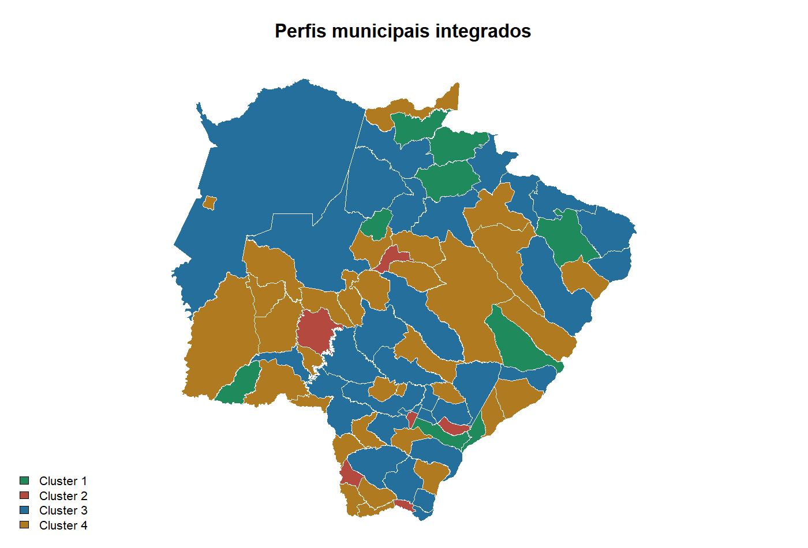
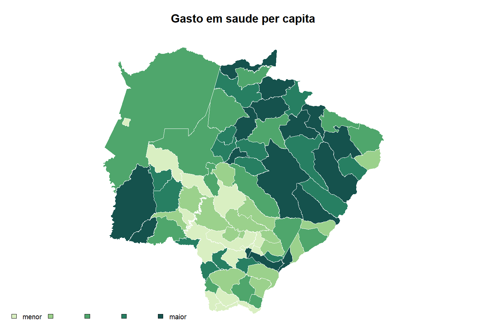
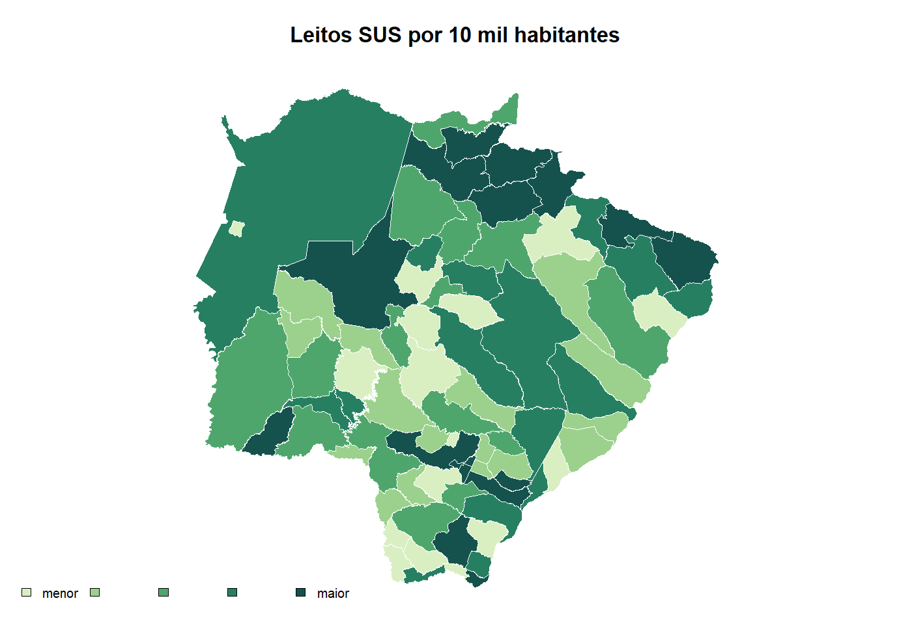
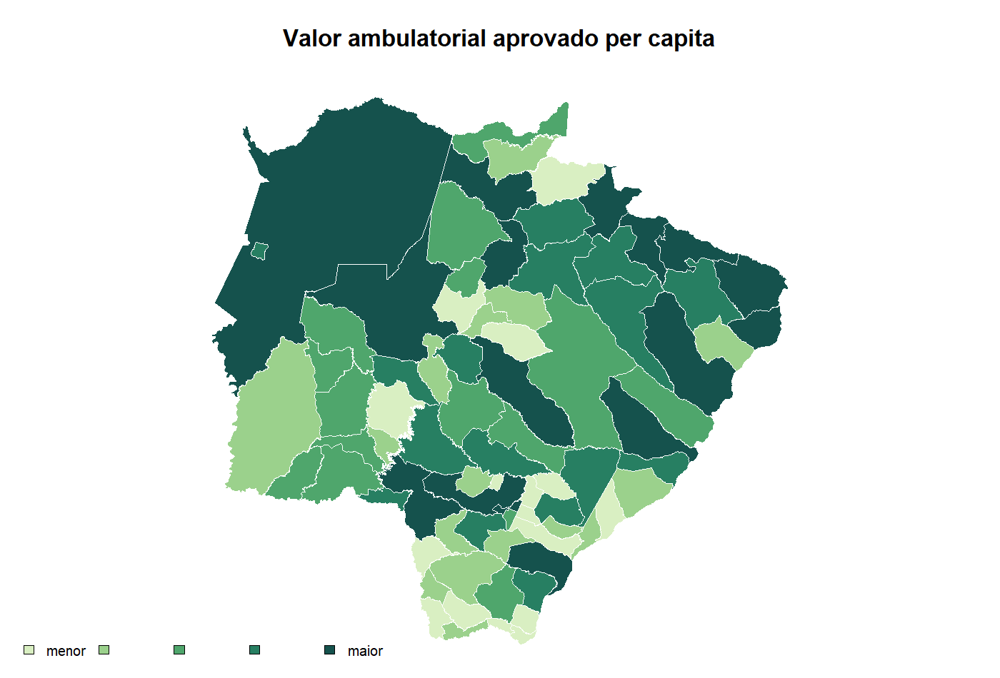
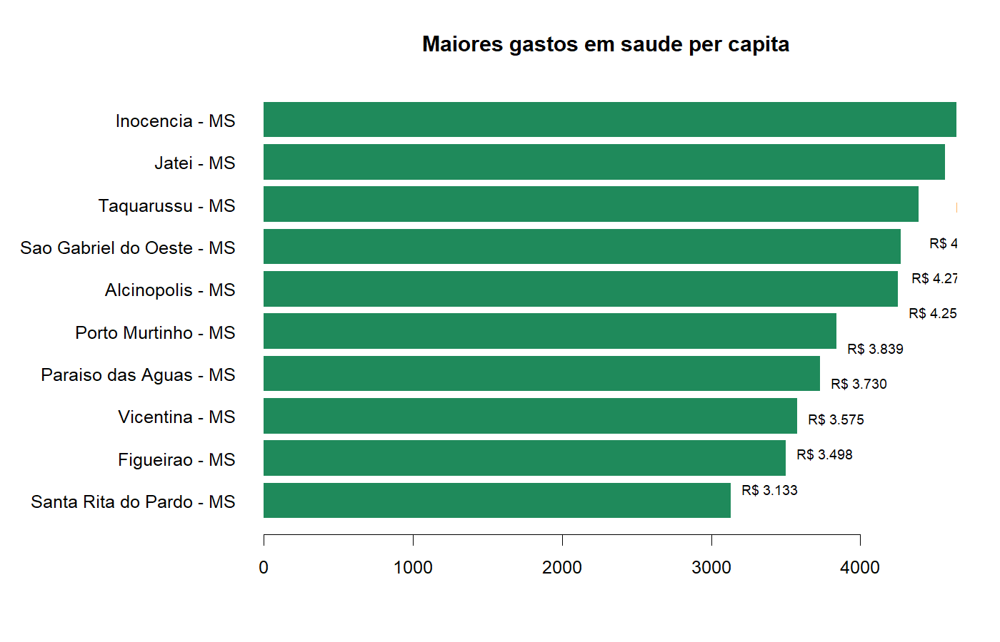
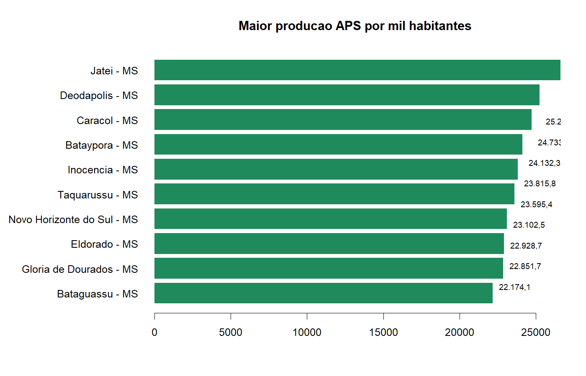

Perfis municipais
| Perfil | Municipios | Gasto per capita | Leitos SUS/10 mil | Sintese |
|---|---|---|---|---|
| Cluster 1 | 9 | R$ 3.498 | 24,3 | Small municipalities with high local capacity |
| Cluster 2 | 6 | R$ 2.465 | 9,5 | High spending and outcome-alert profile |
| Cluster 3 | 31 | R$ 2.007 | 15,1 | Regional hubs and dense network |
| Cluster 4 | 33 | R$ 2.153 | 9,3 | Lower-density structure |
Mostras visuais da analise





